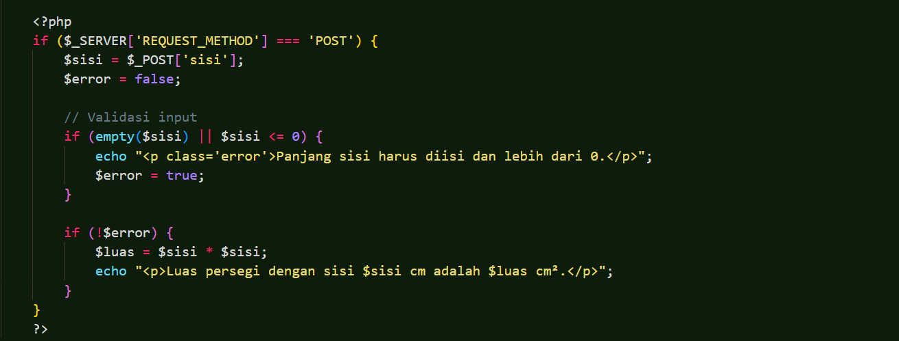
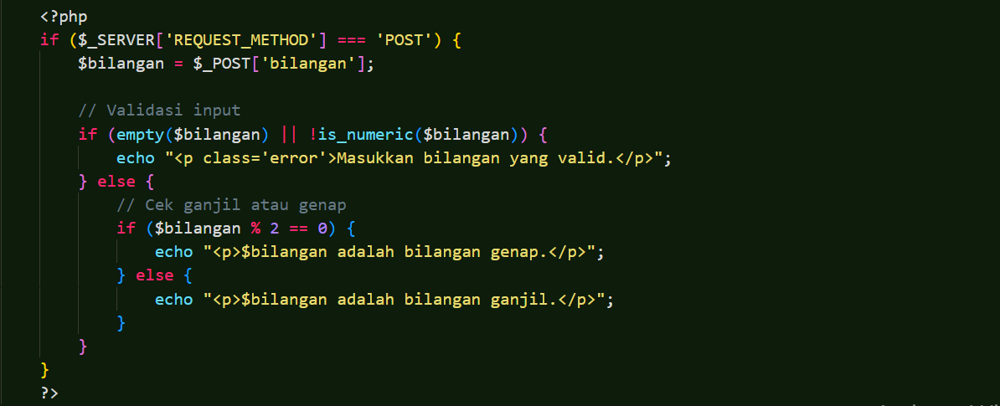
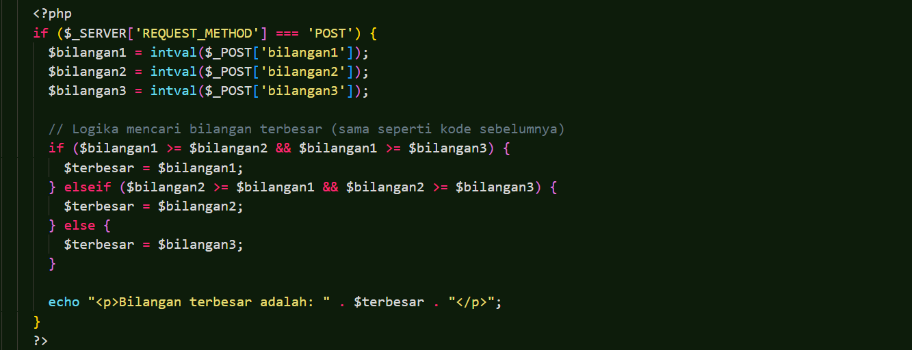

Menghitung Luas Persegi >Deskripsi Algoritma Mulai Masukkan panjang sisi persegi (s) Hitung luas persegi dengan rumus: Luas = s x s Tampilkan hasil luas persegi. Selesai >Kode 
Menentukan Bilangan Ganjil atau Genap >Deskripsi Algoritma Mulai Masukkan bilangan bulat x. Hitung sisa pembagian x dengan 2: Sisa = x mod 2. Jika sisa = 0, maka bilangan adalah genap. Jika sisa ≠ 0, maka bilangan adalah ganjil. Tampilkan hasil. Selesai >Kode 
Menentukan Bilangan Terbesar dari 3 Bilangan >Deskripsi Algoritma Mulai Masukkan 3 bilangan: A, B dan C Jika A >= B dan A >= C, maka A adalah bilangan terbesar. Jika B >= A dan B >= C, maka B adalah bilangan terbesar. Jika tidak, maka C adalah bilangan terbesar Tampilan hasil bilang terbesar Selesai >Kode 